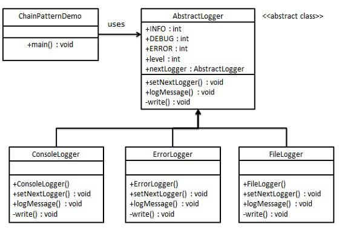

顾名思义，责任链模式（Chain of Responsibility Pattern）为请求创建了一个接收者对象的链。这种模式给予请求的类型，对请求的发送者和接收者进行解耦。这种类型的设计模式属于行为型模式。
在这种模式中，通常每个接收者都包含对另一个接收者的引用。如果一个对象不能处理该请求，那么它会把相同的请求传给下一个接收者，依此类推。
介绍
意图：避免请求发送者与接收者耦合在一起，让多个对象都有可能接收请求，将这些对象连接成一条链，并且沿着这条链传递请求，直到有对象处理它为止。
主要解决：职责链上的处理者负责处理请求，客户只需要将请求发送到职责链上即可，无须关心请求的处理细节和请求的传递，所以职责链将请求的发送者和请求的处理者解耦了。
何时使用：在处理消息的时候以过滤很多道。
如何解决：拦截的类都实现统一接口。
关键代码：Handler 里面聚合它自己，在 HanleRequest 里判断是否合适，如果没达到条件则向下传递，向谁传递之前 set 进去。
应用实例： 1、红楼梦中的"击鼓传花"。 2、JS 中的事件冒泡。 3、JAVA WEB 中 Apache Tomcat 对 Encoding 的处理，Struts2 的拦截器，jsp servlet 的 Filter。
优点： 1、降低耦合度。它将请求的发送者和接收者解耦。 2、简化了对象。使得对象不需要知道链的结构。 3、增强给对象指派职责的灵活性。通过改变链内的成员或者调动它们的次序，允许动态地新增或者删除责任。 4、增加新的请求处理类很方便。
缺点： 1、不能保证请求一定被接收。 2、系统性能将受到一定影响，而且在进行代码调试时不太方便，可能会造成循环调用。 3、可能不容易观察运行时的特征，有碍于除错。
使用场景： 1、有多个对象可以处理同一个请求，具体哪个对象处理该请求由运行时刻自动确定。 2、在不明确指定接收者的情况下，向多个对象中的一个提交一个请求。 3、可动态指定一组对象处理请求。
注意事项：在 JAVA WEB 中遇到很多应用。
实现
我们创建抽象类 AbstractLogger，带有详细的日志记录级别。然后我们创建三种类型的记录器，都扩展了 AbstractLogger。每个记录器消息的级别是否属于自己的级别，如果是则相应地打印出来，否则将不打印并把消息传给下一个记录器。

步骤 1
创建抽象的记录器类。
AbstractLogger.java
public abstract class AbstractLogger {
public static int INFO = 1;
public static int DEBUG = 2;
public static int ERROR = 3;
protected int level;
//责任链中的下一个元素
protected AbstractLogger nextLogger;
public void setNextLogger(AbstractLogger nextLogger){
this.nextLogger = nextLogger;
}
public void logMessage(int level, String message){
if(this.level <= level){
write(message);
}
if(nextLogger !=null){
nextLogger.logMessage(level, message);
}
}
abstract protected void write(String message);
}
步骤 2
创建扩展了该记录器类的实体类。
ConsoleLogger.java
public class ConsoleLogger extends AbstractLogger {
public ConsoleLogger(int level){
this.level = level;
}
@Override
protected void write(String message) {
System.out.println("Standard Console::Logger: " + message);
}
}
ErrorLogger.java
public class ErrorLogger extends AbstractLogger {
public ErrorLogger(int level){
this.level = level;
}
@Override
protected void write(String message) {
System.out.println("Error Console::Logger: " + message);
}
}
FileLogger.java
public class FileLogger extends AbstractLogger {
public FileLogger(int level){
this.level = level;
}
@Override
protected void write(String message) {
System.out.println("File::Logger: " + message);
}
}
步骤 3
创建不同类型的记录器。赋予它们不同的错误级别，并在每个记录器中设置下一个记录器。每个记录器中的下一个记录器代表的是链的一部分。
ChainPatternDemo.java
public class ChainPatternDemo {
private static AbstractLogger getChainOfLoggers(){
AbstractLogger errorLogger = new ErrorLogger(AbstractLogger.ERROR);
AbstractLogger fileLogger = new FileLogger(AbstractLogger.DEBUG);
AbstractLogger consoleLogger = new ConsoleLogger(AbstractLogger.INFO);
errorLogger.setNextLogger(fileLogger);
fileLogger.setNextLogger(consoleLogger);
return errorLogger;
}
public static void main(String[] args) {
AbstractLogger loggerChain = getChainOfLoggers();
loggerChain.logMessage(AbstractLogger.INFO, "This is an information.");
loggerChain.logMessage(AbstractLogger.DEBUG, "This is an debug level information.");
loggerChain.logMessage(AbstractLogger.ERROR, "This is an error information.");
}
}
步骤 4
执行程序，输出结果：
Standard Console::Logger: This is an information.
File::Logger: This is an debug level information.
Standard Console::Logger: This is an debug level information.
Error Console::Logger: This is an error information.
File::Logger: This is an error information.
Standard Console::Logger: This is an error information.